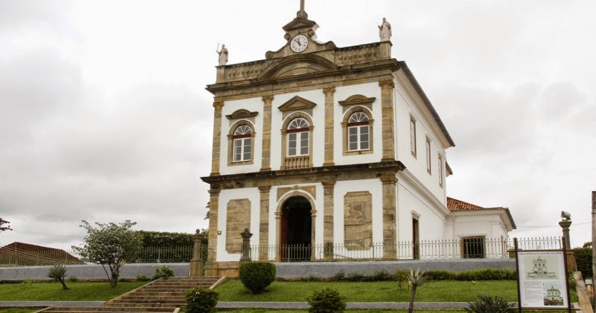
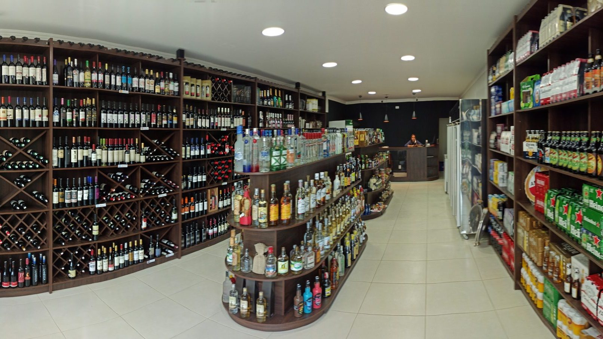

Bem-Vindo a Carmo RJ

Conheça um pouco sobre a cidade:
Apaixonante, inesquecível e com um clima que agrada a todos. Localizada estrategicamente na divisa de Minas Gerais com o Rio de Janeiro, Carmo carrega o melhor dos dois estados. A cidade une a hospitalidade típica mineira com o charme fluminense, resultando em um povo extremamente acolhedor. Além de uma arquitetura preservada e cultura riquíssima, o município se destaca pela culinária de ponta — que vai desde as famosas lanchonetes e pizzarias locais até a produção da melhor cachaça do Brasil*.
Apesar da temperatura média se assemelhar bastante com a da nossa região aqui da Zona da Mata mineira, a geografia de Carmo oferece um microclima especial. Aninhada em um vale, a cidade funciona como um corredor natural para ventos frescos que sopram até nos dias mais quentes de verão. Essa característica geográfica garante uma umidade confortável e noites com temperaturas sempre agradáveis, perfeitas para um passeio no centro histórico ou um jantar nas praças da cidade.
A rica história carmense está cravada em suas ruas e casarões. Até o século XIX, as terras de Carmo eram compostas por densa Mata Atlântica e pertenciam a Cantagalo. A virada aconteceu por volta de 1832, impulsionada pela força do ciclo do café. Colonos desbravaram as margens do Rio Paraíba do Sul e ergueram a primeira capela no morro da Samambaia, dando origem ao núcleo do povoado. O enriquecimento trazido pelos barões do café acelerou o desenvolvimento: o arraial cresceu e virou freguesia.
Em 1877, inauguraram a majestosa nova igreja matriz (que levou anos para ser totalmente concluída), tornando-se o grande cartão-postal da cidade. O peso econômico da região garantiu sua emancipação em 13 de outubro de 1881. Já em 1889, Carmo foi oficialmente elevada à categoria de cidade, passando por um minucioso planejamento urbano, de ruas retas e organizadas, para comportar o seu crescimento. O progresso tecnológico não demorou a chegar: em 1921, a empresa Light conseguiu a concessão para explorar o imenso potencial hídrico do rio na Ilha dos Pombos, marcando um novo capítulo de energia e inovação para o município.

Culinária
Apesar de ser uma cidade pacata e charmosa do interior, Carmo surpreende e ostenta, com orgulho, o título carinhoso de "capital dos hambúrgueres e pizzas" da região. Os estabelecimentos locais não brincam em serviço quando o assunto é gastronomia de altíssima qualidade. O nível de exigência e a paixão pela culinária são tão altos que há chefs e pizzaiolos na cidade que buscaram especialização no exterior. Tudo isso para trazer técnicas refinadas e oferecer uma massa de pizza inesquecível, daquelas que derretem na boca e deixam qualquer turista com vontade de voltar.
Mas os sabores carmenses vão muito além das massas artesanais. O clima boêmio e acolhedor ganha vida nos bares e botecos tradicionais, onde a influência fluminense e mineira se encontram. Um ponto de parada obrigatório para qualquer visitante é provar o icônico e crocante Frango a Passarinho do Bar do Peixe, uma verdadeira instituição local. Para acompanhar a porção ou apenas curtir a noite com os amigos, a Tropical domina a arte da coquetelaria, servindo drinks deliciosos, coloridos e super criativos.
Já para os paladares que buscam uma experiência mais requintada e intimista, o município mostra toda a sua versatilidade. A Taberna 101 se destaca como o refúgio perfeito, oferecendo uma atmosfera elegante e a bebida ideal para cada ocasião. Com uma carta invejável e coleções cuidadosamente selecionadas de vinhos nacionais e internacionais, o espaço prova que Carmo é um polo gastronômico completo, capaz de agradar desde quem busca um lanche caprichado na praça até aquele que não abre mão de um brinde sofisticado.